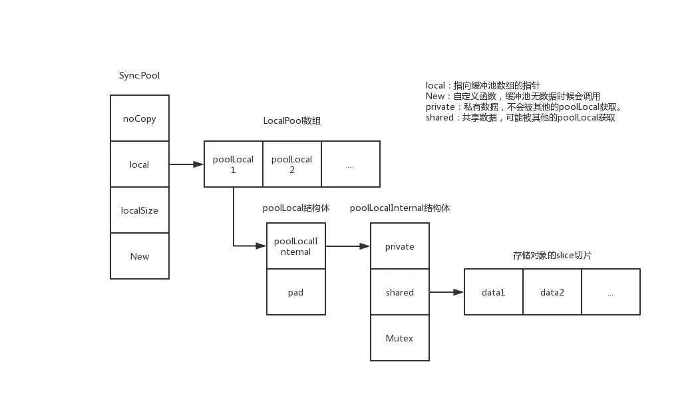
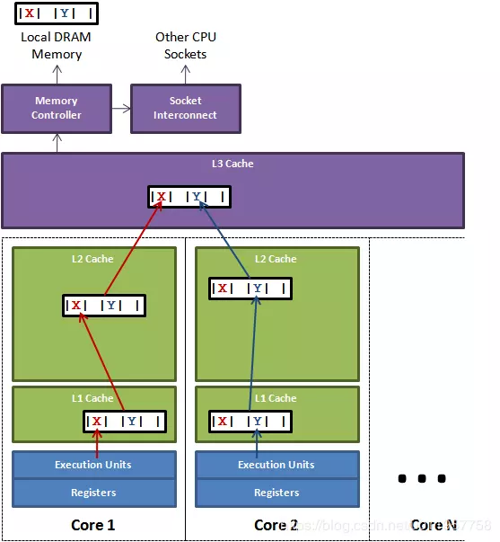

前言
今天在思考优化GC的套路，看到了sync.Pool，那就来总结下，希望可以有个了断。
用最通俗的话，讲明白知识。以下知识点10s后即将到来。
- pool是什么？
- 为什么需要sync.Pool？
- 如何使用sync.Pool？
- 走一波源码
- 源码关键点解析
正文
1.sync.Pool是什么？
Golang在 1.3 版本的时候，在sync包中加入一个新特性：Pool。
简单的说：就是一个临时对象池。
2.为什么需要sync.Pool？
保存和复用临时对象，减少内存分配，降低GC压力。
（对象越多GC越慢，因为Golang进行三色标记回收的时候，要标记的也越多，自然就慢了）
3.如何使用sync.Pool？
1 | func main() { |
使用较为简单。
总的思路就是：搞一个池子，预先放入临时产生的对象，然后取出使用。
可能有同学问了，这个玩意儿官方出的，那他自己有在用吗？
答案是有的，其实你也一直在用。
就是fmt包啦，由于fmt总是需要很多[]byte对象，索性就直接建了一个[]byte对象的池子，来走一波代码。1
2
3
4
5
6
7
8
9
10
11
12
13
14
15
16
17
18
19type buffer []byte
// printer状态的结构体（）
type pp struct {
...
}
// pp的对象池， 《====这里用到了。
var ppFree = sync.Pool{
New: func() interface{} { return new(pp) },
}
// 每次需要pp结构体的时候，都过sync.Pool进行获取。
func newPrinter() *pp {
p := ppFree.Get().(*pp)
p.panicking = false
p.erroring = false
p.fmt.init(&p.buf)
return p
}
4.走一波源码
4.1 基础数据结构
1 | type Pool struct { |
来一张全景图，更有利于全局角度看这个结构体：

这边有两个小问题：
- noCopy的作用？
- poolLocal中pad的作用？
- 如何确定要获取的数据在哪个poolLocal里头？
带着问题，继续往下看，看完就能懂这两个小问题拉。
4.2 pin
在介绍get/put前，关键的基础函数pin需要先了解一下。
一句话说明用处：确定当前P绑定的localPool对象
（这里的P，是MPG中的P，如果看不懂请点这里：!关于goroutine的一些小理解）1
2
3
4
5
6
7
8
9
10
11
12
13
14
15
16
17
18
19
20
21
22
23
24
25
26
27
28
29
30
31
32
33
34
35
36
37
38
39
40
41
42
43
44
45
46
47
48
49
50
51
52
53
54
55
56
57
58
59
60
61
62
63
64
65func (p *Pool) pin() *poolLocal {
// 返回当前 P.id && 设置禁止抢占（避免GC）
pid := runtime_procPin()
// 根据locaSize来获取当前指针偏移的位置
s := atomic.LoadUintptr(&p.localSize)
l := p.local
// 有可能在运行中动调调整P，所以这里进行需要判断是否越界
if uintptr(pid) < s {
// 没越界，直接返回
return indexLocal(l, pid)
}
// 越界时，会涉及全局加锁，重新分配poolLocal，添加到全局列表
return p.pinSlow()
}
var (
allPoolsMu Mutex
allPools []*Pool
)
func (p *Pool) pinSlow() *poolLocal {
// 取消P的禁止抢占（因为后面要进行metux加锁）
runtime_procUnpin()
// 加锁
allPoolsMu.Lock()
defer allPoolsMu.Unlock()
// 返回当前 P.id && 设置禁止抢占（避免GC）
pid := runtime_procPin()
// 再次检查是否符合条件，有可能中途已被其他线程调用
s := p.localSize
l := p.local
if uintptr(pid) < s {
return indexLocal(l, pid)
}
// 如果数组为空，则新建Pool，将其添加到 allPools，GC以此获取所有 Pool 实例
if p.local == nil {
allPools = append(allPools, p)
}
// 根据 P 数量创建 slice
size := runtime.GOMAXPROCS(0)
local := make([]poolLocal, size)
// 将底层数组起始指针保存到 Pool.local，并设置 P.localSize
// 这里需要关注的是：如果GOMAXPROCS在GC间发生变化，则会重新分配的时候，直接丢弃老的，等待GC回收。
atomic.StorePointer(&p.local, unsafe.Pointer(&local[0]))
atomic.StoreUintptr(&p.localSize, uintptr(size))
// 返回本次所需的 poolLocal
return &local[pid]
}
// 根据数据结构的大小来计算指针的偏移量
func indexLocal(l unsafe.Pointer, i int) *poolLocal {
lp := unsafe.Pointer(uintptr(l) + uintptr(i)*unsafe.Sizeof(poolLocal{}))
return (*poolLocal)(lp)
}
流程小记：1
2禁止抢占GC -> 寻找偏移量 -> 检查越界 ->返回poolLocal
->加锁重建pool，并添加到allPool
4.3 put
先说结论：优先放入private空间，后面再放入shared空间
现在开始分析：1
2
3
4
5
6
7
8
9
10
11
12
13
14
15
16
17
18
19
20
21
22
23
24
25
26
27
28
29
30
31
32
33
34
35
36
37func (p *Pool) Put(x interface{}) {
if x == nil {
return
}
// 这段代码，不需要关心，降低竞争的
if race.Enabled {
if fastrand()%4 == 0 {
// Randomly drop x on floor.
return
}
race.ReleaseMerge(poolRaceAddr(x))
race.Disable()
}
// 获取当前的poolLocal
l := p.pin()
// 如果private为nil，则优先进行设置，并标记x
if l.private == nil {
l.private = x
x = nil
}
runtime_procUnpin()
// 如果标记x不为nil，则将x设置到shared中
if x != nil {
l.Lock()
l.shared = append(l.shared, x)
l.Unlock()
}
// 设置竞争可用了。
if race.Enabled {
race.Enable()
}
}
4.4 get
先说结论：优先从private空间拿，再加锁从shared空间拿，还没有再从其他的PoolLocal的shared空间拿，还没有就直接new一个返回。
现在进行分析：1
2
3
4
5
6
7
8
9
10
11
12
13
14
15
16
17
18
19
20
21
22
23
24
25
26
27
28
29
30
31
32
33
34
35
36
37
38
39
40
41
42
43
44
45
46
47
48
49
50
51
52
53
54
55
56
57
58
59
60
61
62
63
64
65
66
67
68
69
70
71
72func (p *Pool) Get() interface{} {
// 竞争相关的设置
if race.Enabled {
race.Disable()
}
// 获取当前的poolLocal
l := p.pin()
// 从private中获取
x := l.private
l.private = nil
runtime_procUnpin()
// 不存在，则继续从shared空间拿，
if x == nil {
// 加锁了，防止并发
l.Lock()
last := len(l.shared) - 1
if last >= 0 {
x = l.shared[last]
// 从尾巴开始拿起
l.shared = l.shared[:last]
}
l.Unlock()
if x == nil {
// 从其他的poolLocal中的shared空间看看有没有可返回的。
x = p.getSlow()
}
}
// 竞争解除
if race.Enabled {
race.Enable()
if x != nil {
race.Acquire(poolRaceAddr(x))
}
}
// 如果还是没有的话，就直接new一个了
if x == nil && p.New != nil {
x = p.New()
}
return x
}
func (p *Pool) getSlow() (x interface{}) {
// 获取poolLocal数组的大小
size := atomic.LoadUintptr(&p.localSize) // load-acquire
local := p.local // load-consume
// 尝试从其他procs获取一个P对象
pid := runtime_procPin()
runtime_procUnpin()
for i := 0; i < int(size); i++ {
// 获取一个poolLocal，注意这里是从当前的local的位置开始获取的，目的是防止取到自身
l := indexLocal(local, (pid+i+1)%int(size))
// 加锁从尾部获取shared的数据
l.Lock()
last := len(l.shared) - 1
// 若长度大于1
if last >= 0 {
x = l.shared[last]
l.shared = l.shared[:last]
l.Unlock()
break
}
l.Unlock()
}
return x
}
5.源码关键点解析
5.1 定时清理
Q：这里的pool的是永久保存的吗？还是？
A：是会进行清理的，时间就是两次GC间隔的时间。
1 | // 注册清理函数，随着runtime进行的，也就是每次GC都会跑一下 |
所以呢，这也说明为什么sync.Pool不适合放做“数据库连接池”等带持久性质的数据，因为它会定期回收啊～
5.2 为什么获取shared要加锁，而private不用？
我们知道golang是MPG的方式运行的，（!关于goroutine的一些小理解）
大概这么个感觉吧：
M------P----- poolLocal
|
G - G
|
G
...
M------P----- poolLocal
|
G---G
|
G
...
也就是说，每个P都分配一个localPool，在同一个P下面只会有一个Gouroutine在跑，所以这里的private，在同一时间就只可能被一个Gouroutine获取到。
而shared就不一样了，有可能被其他的P给获取走，在同一时间就只可能被多个Gouroutine获取到，为了保证数据竞争，必须加一个锁来保证只会被一个G拿走。
5.3 noCopy的作用？
防止Pool被拷贝，因为Pool 在Golang是全剧唯一的
这里又衍生一个问题，这里的noCopy如何实现被防止拷贝的？？？
Golang中没有原生的禁止拷贝的方式，所以结构体不希望被拷贝，所以go作者做了这么一个约定：只要包含实现 sync.Locker 这个接口的结构体noCopy，go vet 就可以帮我们进行检查是否被拷贝了。
5.4 pad的作用？
这个挺有意思的，源代码出现这么一个词：false sharing，翻译为“伪共享”。
也就是说这个字段，主要就是用来防止“伪共享”的。
为什么会有false sharing？
简单说明一下：缓存系统中是以缓存行为单位存储的。缓存行通常是 64 字节，当缓存行加载其中1个字节时候，其他的63个也会被加载出来，加锁的话也会加锁整个缓存行，当下图所示x、y变量都在一个缓存行的时候，当进行X加锁的时候，正好另一个独立线程要操作Y，这会儿Y就要等X了，此时就不无法并发了。
由于这里的竞争冲突来源自共享，所以称之为伪共享。

（图片来自https://www.cnblogs.com/cyfonly/p/5800758.html）
如何防止？
补齐缓存行，让每个数据都是独立的缓存行就不会出现false sharding了。
5.5 怎么确定我的数据应该存储在LocalPool数组的哪个单元？
根据数据结构的大小来计算指针的偏移量，进而算出是LocalPool数组的哪个。
5.6 sync.Pool的设计哲学？
Goroutine能同一时刻在并行的数量有限，是由runtime.GOMAXPROCS(0)设置的，这里的Pool将数据与P进行绑定了，分散在了各个真正并行的线程中，每个线程优先从自己的poolLocal中获取数据，很大程度上降低了锁竞争。
作者：咖啡色的羊驼
链接：https://juejin.im/post/5d4087276fb9a06adb7fbe4a
来源：掘金
著作权归作者所有。商业转载请联系作者获得授权，非商业转载请注明出处。